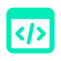
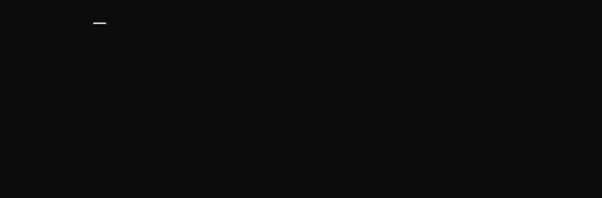
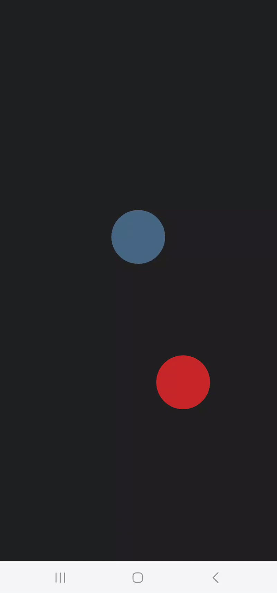
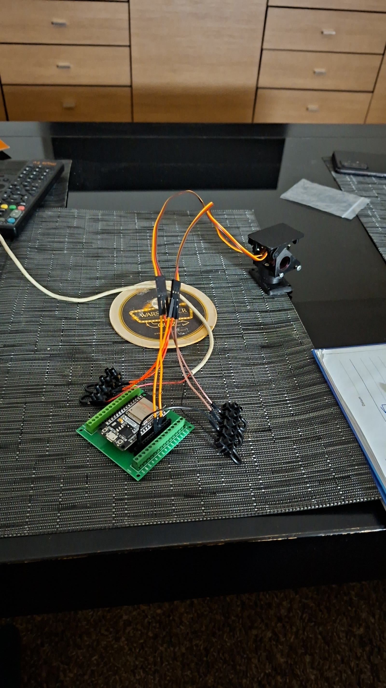
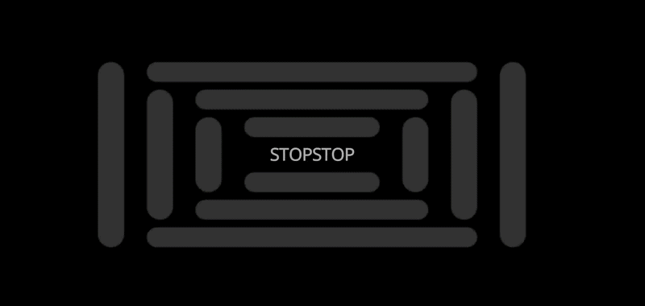
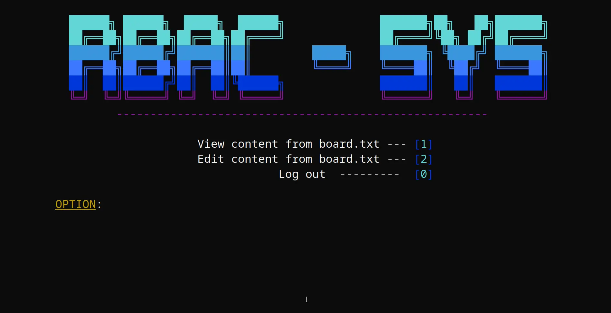
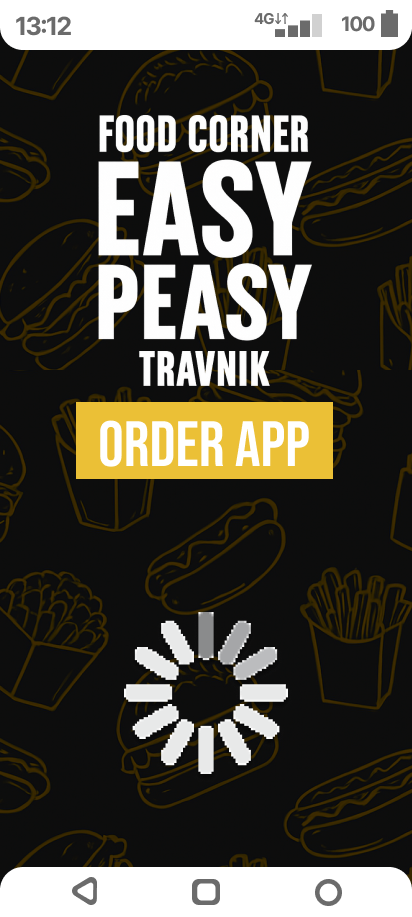
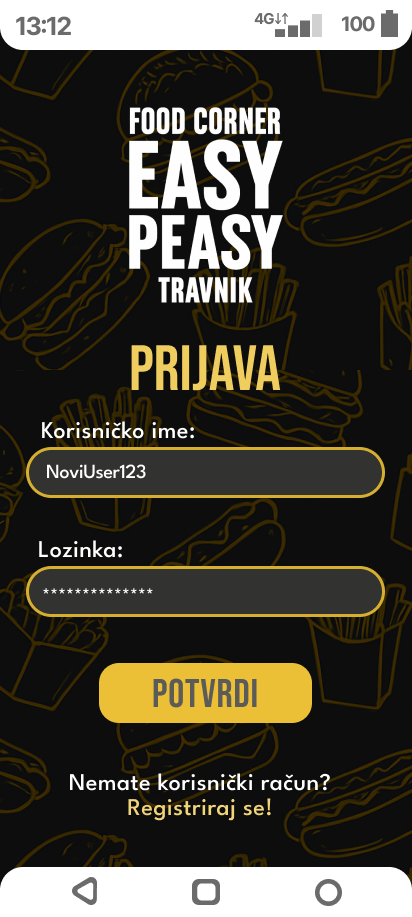
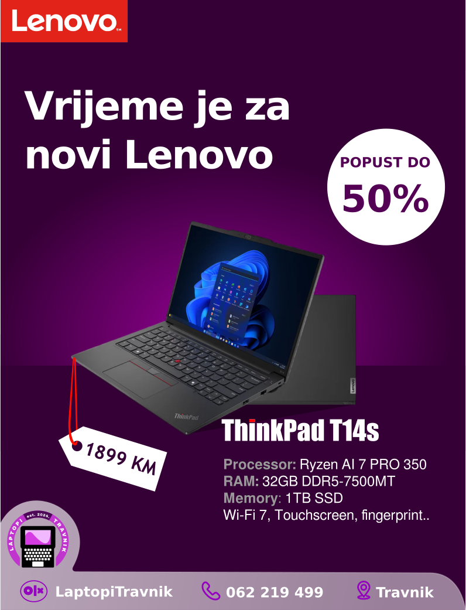
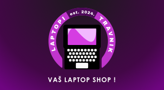

Projekti i radovi
BORBA - TUI igra
BORBA (v1.3) je konzolna igra na poteze (kao stare pokemon igre) napisana u C++ jeziku. Sačinjena od custom header-only biblioteke za animacije, RAII principa, MVC arhitekture koja je na početku bila monolitna i STL biblioteke. Cilj ovoga projekta je bio refaktorisanje ranijih verzija, vladanje Git repozitorija i zaokruživanje stečenog znanja iz C++ jezika što privatno, što na fakultetu.
Korištene tehnologije:

TiltControl - višenamjenski projekat
Mobilna aplikacija u fokusu očitavanja vrijednosti sa akcelerometra koja je pronašla svoju namjenu u:
- Aplikaciji koja raspolaže manipulacijom objekta u stvarnom vremenu (pokret, veličinu i brzinu) i logikom za sudar sa drugim objektom [mobile-game engine]
- Kontroler koji čita vrijednosti akcelerometra sa dvije ose, kalkuliše i daje na izlaz mapiran custom-made format u cilju upravljanja "Pan-tilt bracket" sistema preko UDP protokola u stvarnom vremenu
Također, cilj projekta je implementacija sopstvenih ideja pored fakultativnih obaveza, te razvoj softvera u publici (plasiranje na LinkedIn).
Korištene tehnologije:




RBAC-SYS - Admin vs Worker
Tokom realizacije seminarskog rada na temu "Upravljanje identitetima i pristupima (IAM sistemi)" kao praktični dio bila je implementacija RBAC sistema u terminalu napisan u C++ programskom jeziku. RBAC-SYS nudi samu separaciju uloga u sistemu, ko je nadređeni, a ko podređeni. Također, dodan je custom editor na ciljani fajl koji daje iskustvo Vim okruženja kao i nano naredbe na Linux distribucijama. Cilj je bio da se napravi projekat u kojem ću svoje biblioteke ponovo upotrijebiti i unaprijediti tokom nailaženja na nove izazove, te upoznati se sa eksternim bibliotekama koje imaju podršku za taj jezik.
Korištene tehnologije:


Mnoštvo grafičkih prijedloga
Na predmetima vezanim za grafiku i općenito dizajn razvio sam vještinu sistematske podjele potrebnih stavki i komponenti u projektima, sama pravila UI/UX oblasti, te konstantnim radom i znatiželjom razvio sam malo osjećaja za kreiranje grafičkih rješenja po pitanju reklamnih postera, vizit kartica, kao i kompletnih wireframe rješenja za aplikacije. Nažalost, nemam toliko prilike da se posvetim ovoj oblasti radi ostalih strasti, međutim ovaj nivo znanja mi dobro dođe kao još jedan alat na švicarskom nožu.
Korištene tehnologije:



